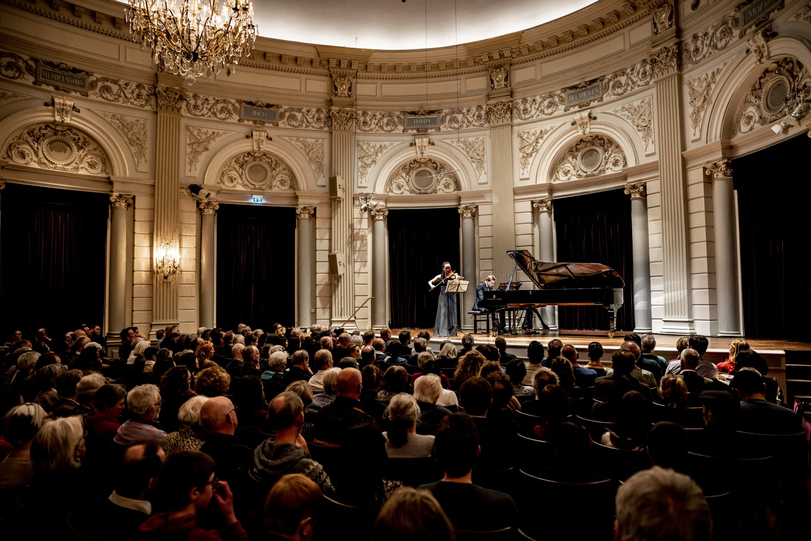
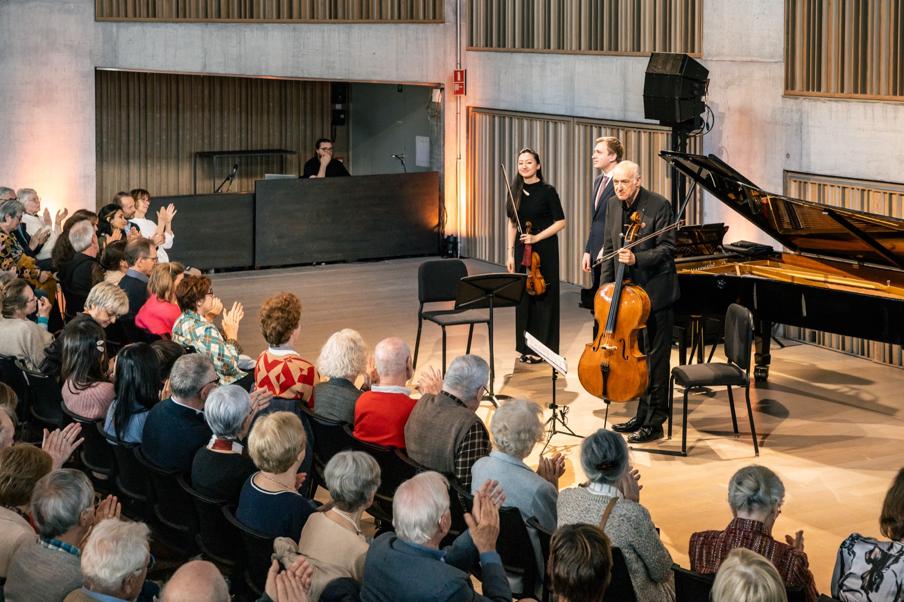
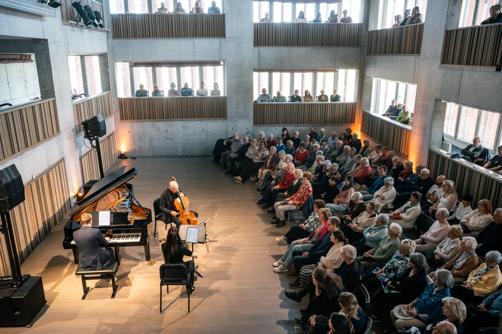
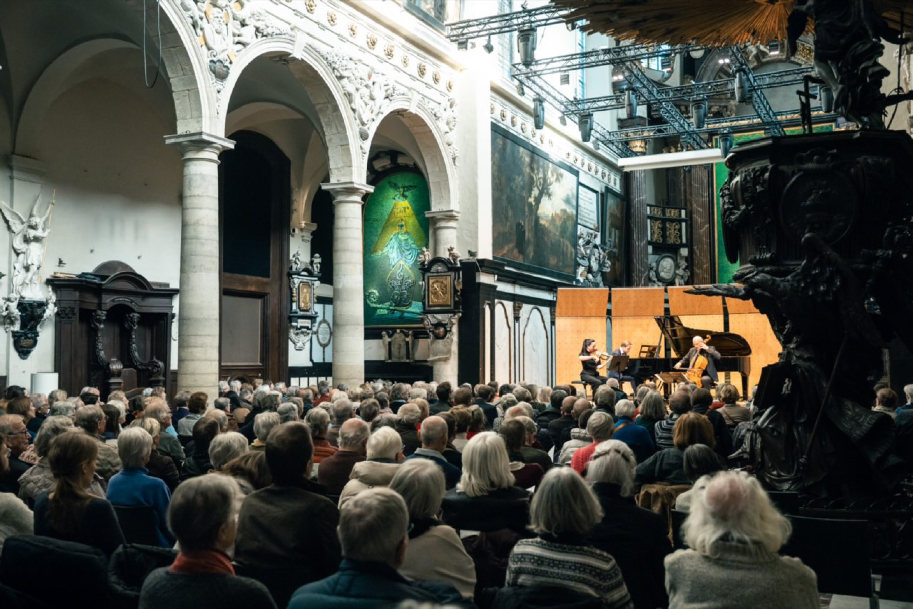
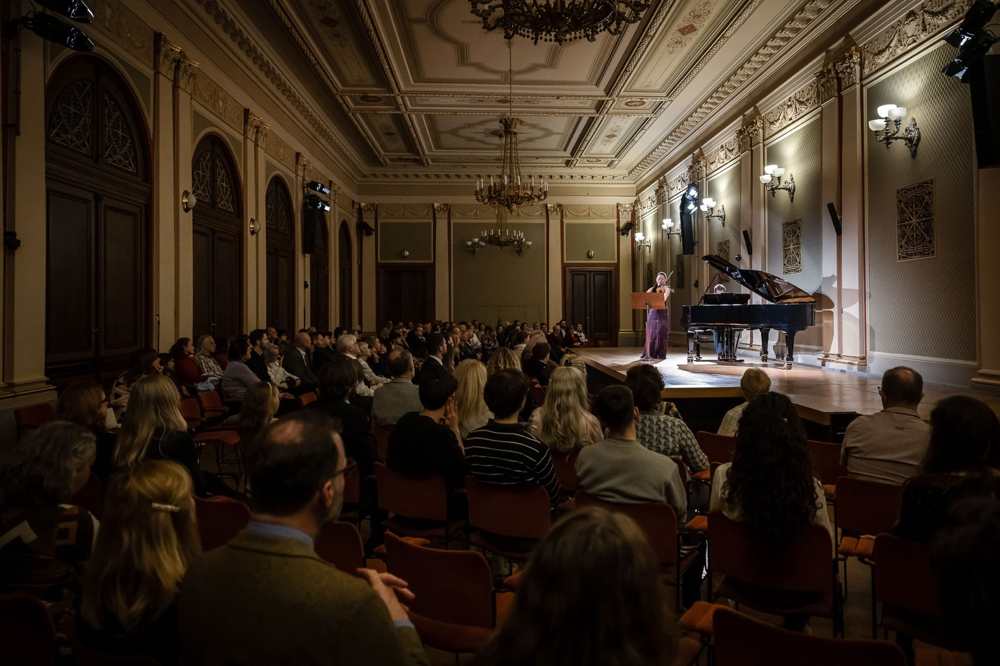
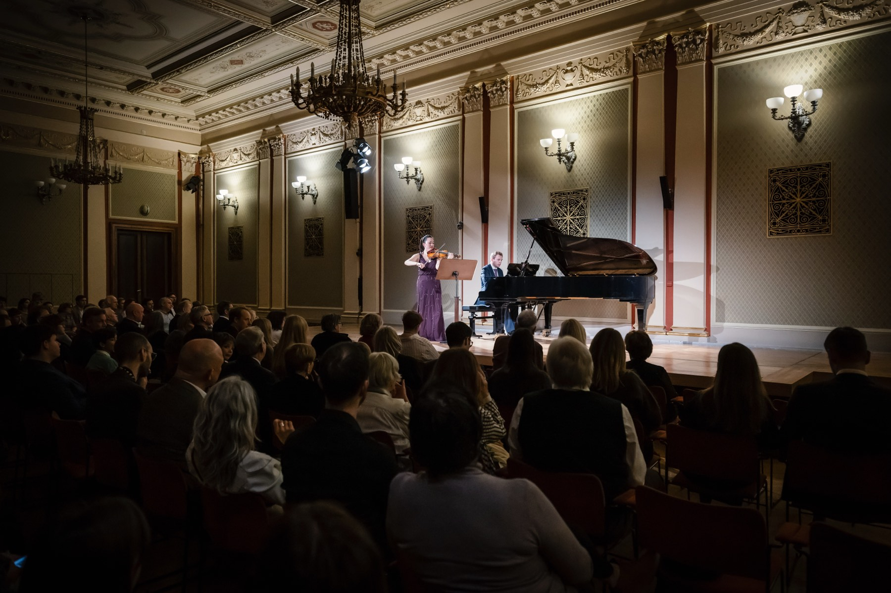
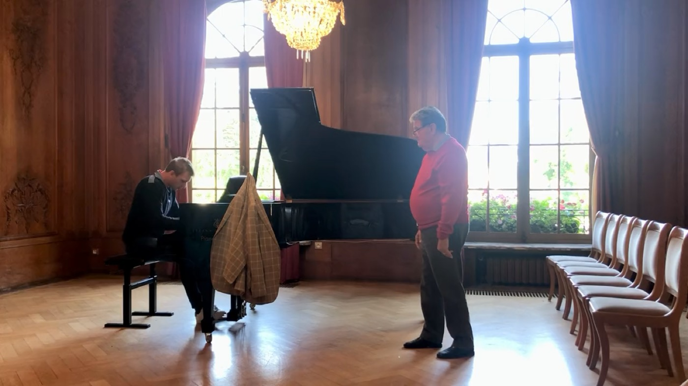
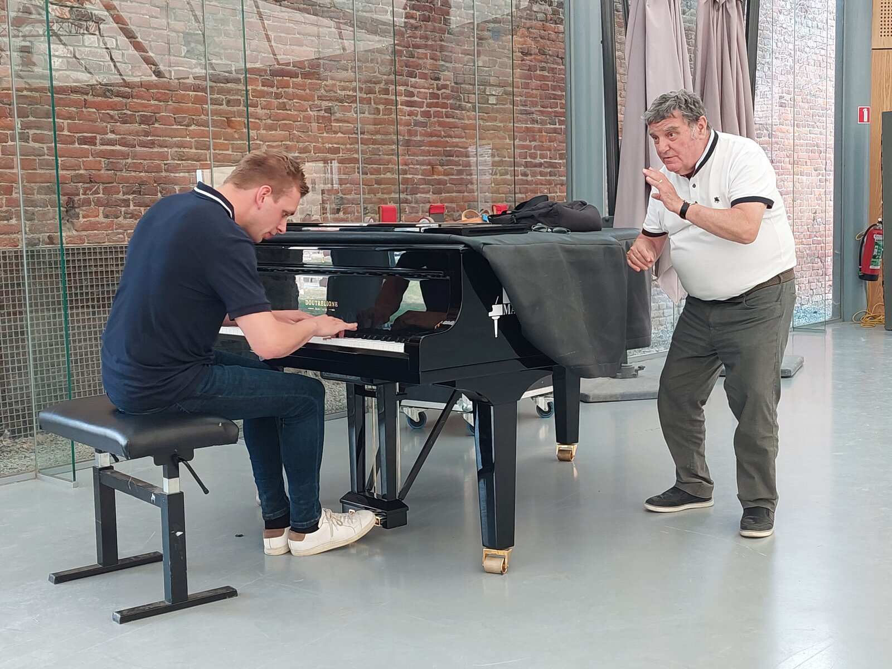
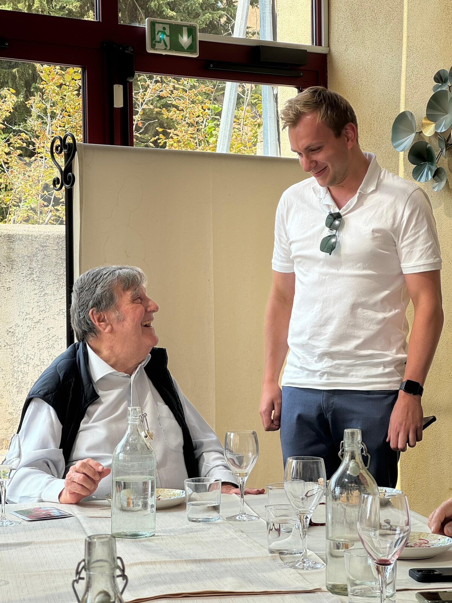
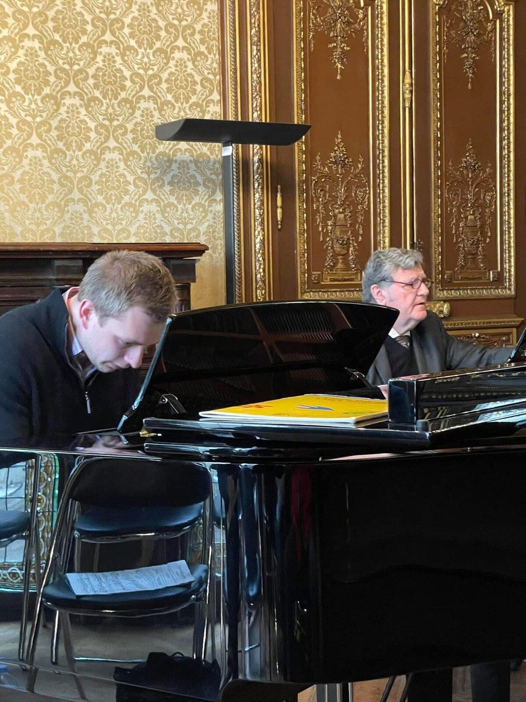

Born in Delft, musically formed in Paris in the tradition of the Russian piano school. Solo recitals, a duo with violinist Karen Su, and the concert series Experience Klassiek.









Ruben Plazier (Delft, 1998) is a classical pianist formed in the tradition of the Russian piano school. At fourteen he began at the Rotterdam Conservatory under Stéphane De May, who introduced him to French pianist Jean-Bernard Pommier — a meeting that would change his playing for good. After years of traveling between Rotterdam, Béziers and Paris, he was unanimously awarded his Diplôme Supérieur de Concertiste at the École Normale de Musique Alfred Cortot. As a soloist, he has performed concertos with orchestra and appeared in halls including the Concertgebouw Amsterdam and De Doelen Rotterdam, as well as in New York and Los Angeles. Beyond the stage, he curates the classical programming for De Doelen (2026/27 season) and Muziekgebouw Eindhoven, and performs as a duo with violinist Karen Su and as founder of the concert series Experience Klassiek.
Ruben met Jean-Bernard Pommier through his first teacher, Stéphane De May, at the Rotterdam Conservatory. What began as a few lessons in Béziers grew into one of the defining relationships of his musical life: years of travel, first to the south of France, later weekly to Paris, for lessons that stretched into long conversations over breakfast, dinner, and late into the night. Pommier demanded a willingness to start over, again and again, and gave in return something that reached far beyond technique: a way of listening, of thinking about sound, that he himself had inherited from generations of great pedagogues within the Russian piano school. That inheritance now sits at the core of how Ruben plays, and teaches.

Beethoven, Les Adieux — with Pommier, 2021


Full-length programmes centred on French repertoire and the Russian pianistic lineage — Debussy, Scriabin, and composers just outside the standard canon.
A working partnership built over years of shared repertoire, from sonata literature to newly paired programmes for smaller, more intimate halls.
A trio programme built around Karen Su on violin and Luc Tooten on cello, pairing chamber repertoire with the same attention to line and story as the solo and duo work.
Ruben curates the classical programming at Muziekgebouw Eindhoven.
View the classical programme →Founded together with violinist Karen Su, the Academy passes on what Ruben once received from his own teachers — coaching the next generation of musicians in technique, sound and stage presence, alongside the Experience Klassiek concert series.
Read about the Academy on Violinist.com →